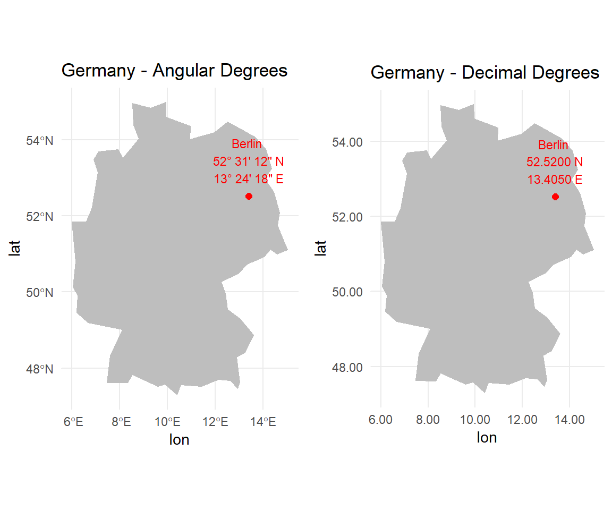

Chapter 7 Geo Data
Geo data, short for geographic data, is a fundamental aspect of our digital world that captures information about locations on Earth. It encompasses a wide range of spatial data, including coordinates, addresses, and attributes tied to specific geographic points. Geo data plays a pivotal role in shaping our everyday experiences, influencing navigation, enhancing services, and providing valuable insights across various sectors.
One of the most prevalent ways individuals interact with geo data is through the Global Positioning System (GPS) embedded in their mobile phones. When you use GPS on your smartphone, you're tapping into a vast network of satellites orbiting above. These satellites beam signals to your device, allowing it to pinpoint your exact location with remarkable accuracy.
Analyzing and visualizing geospatial data is essential in various fields, including geography, environmental sciences, urban planning, epidemiology, and transportation not to mention social science.
Google Route from Berlin to Munich.
7.1 Geo coordinates
7.1.1 Where Are You?
Websites such as GPS Coordinates offer the capability to determine your precise location on Earth. By accessing these platforms, users can obtain a visual representation of their current surroundings through a map view, along with corresponding geo-coordinates. This valuable service not only provides a real-time snapshot of your location but also offers the convenience of easily retrieving accurate geographic coordinates, enhancing navigation and location-aware applications.
Ask Google Maps for Viadrina European University returns two numbers 52.342977500409994, latitude and 14.555877070488613 latitude.
7.1.2 Latitude and longitude
Latitude and longitude are geographic coordinates used to specify locations on the Earth's surface. They are used to precisely determine a point's position in terms of its north-south and east-west positions.

(#fig:lon_lat)Longitude lines are perpendicular to and latitude lines are parallel to the Equator.
Latitude measures the north-south position of a point on the Earth. The equator is defined as 0 degrees latitude, and it divides the Earth into the Northern Hemisphere (positive latitudes) and the Southern Hemisphere (negative latitudes). The range of latitude extends from -90 degrees (South Pole) to +90 degrees (North Pole).
Longitude measures the east-west position of a point on the Earth. It is also measured in degrees, with the Prime Meridian serving as the reference point. The Prime Meridian, located at Greenwich, London, is defined as 0 degrees longitude. Longitude lines extend from the Prime Meridian to the International Date Line, which is roughly 180 degrees longitude. The range of longitude extends from -180 degrees to +180 degrees.
Well, who invented latitude and longitude and why is latitude positive in the north and where is the North anyway?
History
The decision to have latitude positive in the north and negative in the south is essentially arbitrary. The convention was established to provide a consistent and universally accepted reference frame for geographic coordinates. It was likely influenced by the fact that most early civilizations and cartographers were based in the northern hemisphere.
Regarding the choice of the prime meridian (0 degrees longitude) passing through Greenwich, England, it was largely due to historical reasons and the influence of the British Empire. The concept of establishing a prime meridian dates back to the 19th century when international cooperation in navigation and mapping was increasing. In 1884, at the International Meridian Conference held in Washington, D.C., representatives from various countries agreed to adopt the Greenwich Meridian as the Prime Meridian, mainly because the British Royal Observatory in Greenwich was already internationally recognized for its contributions to astronomy and navigation.
Europe is a continent located entirely in the Northern Hemisphere and mostly in the Eastern Hemisphere. It is situated to the west of Asia, separated by the Ural Mountains, the Ural River, the Caspian Sea, the Caucasus Mountains, and the Black Sea. Here are approximate latitude and longitude ranges for Europe:
- Latitude Range: Approximately 35 degrees North to 71 degrees North.
- Longitude Range: Approximately 25 degrees West to 45 degrees East.

(#fig:europe_lat_long)Europe c. 650.
7.1.3 Angles and Degrees
The intuition is that latitude and longitude are angles. Angular measurements are commonly expressed in units of degrees, minutes, and seconds (DMS). 1 degree equals 60 minutes, and one minute equals 60 seconds.
Berlin, the capitol of Germany is located:
- Latitude: 52° 31' 12" N
- Longitude: 13° 24' 18" E
in DMS. In decimal degrees (DD) we get:
\[\text{Decimal degree} = \text{Degree} + \frac{\text{Minute}}{60} + \frac{\text{Minute}}{3600}\]
- Latitude: 52.5200° N
- Longitude: 13.4050° E

In general, coordinates with six decimal places (0.000001 degrees) can provide location accuracy to approximately within a few centimeters. Each additional decimal place adds further precision, narrowing down the location to smaller units of measurement.
The entrance of Viadrina main building and the best coffee in town are about 40m away.
Latitude is different in the 4th and longitude differs in the 3rd decimal.
| name | address | lat | lon |
|---|---|---|---|
| Viadrina Main Building | Große Scharrnstr. | 52.34228 | 14.55387 |
| Best Coffee In Town | Große Scharrnstr. | 52.34212 | 14.55459 |
7.1.4 Coordinate Reference System
A Coordinate Reference System (CRS) is a framework used to uniquely identify locations on the Earth's surface. It defines how geographic coordinates (latitude and longitude) are mapped to positions on a two-dimensional surface, whether it's a map or a computer screen.
Common CRS formats include:
- Geographic CRS (GCS): Based on a three-dimensional ellipsoidal model of the Earth. Examples include WGS 84 (World Geodetic System 1984) and NAD83 (North American Datum 1983).
- Projected CRS: Represents locations on a two-dimensional plane (e.g., a map). Examples include UTM (Universal Transverse Mercator) and Web Mercator.
The European Petroleum Survey Group Geodesy (EPSG) is best known for its system of spatial reference IDs for coordinate systems. An EPSG code is a unique ID that can be a simple way to identify a CRS.
library(rnaturalearth)
# Get geometries of countries (default CRS is WGS 84)
world <- ne_countries(scale = "medium", returnclass = "sf")
# Check the CRS in world
st_crs(world)$input
#> [1] "WGS 84"The default CRS is WGS 84 (World Geodetic System 1984) which is a widely used global geodetic datum and coordinate system, and it is based on an ellipsoidal model of the Earth.
Below there are two versions of Germany. The left version shows Germany from the WGS 84 (st_transform(germany, crs = 4326)). The right version shows Germany seen from Iceland (st_transform(germany, crs = 5325)).
Test this yourself. Go to Google Maps or Google Earth and navigate to the middle of Iceland. Now, look how the shape of Germany changes.
7.1.5 Distance measurement
Distances are determined by the choice of a distance formula, and considerations such as accuracy requirements, computational efficiency, and the specific shape of the Earth's surface in the area of interest come into play. There are various methods, each tailored to specific contexts:
- Euclidean distance (beeline distance in two dimensions) calculates the straight-line distance between two points in a Cartesian coordinate system (2D).
- Haversine distance is the distance between two points on a sphere given their longitudes and latitudes (3D).
- The earth is not perfectly round. Vincenty distance assumes an ellipsoid instead.
library(geosphere)
# Define the coordinates of New York City and London
coord_nyc <- c(40.7128, -74.0060) # New York City
coord_ldn <- c(51.5074, -0.1278) # London
# Haversine Distance
haversine_distance <- distHaversine(coord_nyc, coord_ldn)
# Vincenty Sphere Distance
sphere_distance <- distVincentySphere(coord_nyc, coord_ldn)
# Vincenty Ellipsoid Distance
ellipsoid_distance <- distVincentyEllipsoid(coord_nyc, coord_ldn)
# Create a data frame
distance_data <- data.frame(
Method = c("Haversine", "Vincenty Sphere", "Vincenty Ellipsoid"),
Distance = c(haversine_distance, sphere_distance, ellipsoid_distance)
)
# Display the data frame as a styled HTML table
kable(distance_data, format = "html") %>%
kable_styling("striped", full_width = FALSE) %>%
add_header_above(c("Distance between New York and London" = 2))| Method | Distance |
|---|---|
| Haversine | 8256431 |
| Vincenty Sphere | 8256431 |
| Vincenty Ellipsoid | 8234358 |
7.1.6 Points And Polygons
Polygon data and geographical coordinates work together to represent and visualize spatial areas on a map. In a geographical context, polygons are commonly used to define the boundaries of regions, countries, cities, or any other geographic entities.
# Load necessary libraries
library(sf)
library(ggplot2)
# Define coordinates of a simple polygon representing Germany
germany_polygon <- st_polygon(list(cbind(c(5, 15, 15, 5, 5), c(47, 47, 55, 55, 47))))
# Create an sf object with the polygon
germany_sf <- st_sf(geometry = st_sfc(germany_polygon))
# Plot the polygon
ggplot() +
geom_sf(data = germany_sf, fill = "lightblue", color = "blue") +
ggtitle("Abstract Polygon of Germany") +
theme_minimal()
Polygon data for countries typically comes from geospatial databases, GIS (Geographic Information System) data, or shapefiles maintained by government agencies, international organizations, or open-source initiatives.


(#fig:ger_shape)Shape of Germany.
7.1.7 Shapefiles
Shapefiles are commonly used to represent geographic data. Shapefiles are a popular geospatial vector data format that stores both geometric and attribute information about geographic features. They are widely used in geographic information system (GIS) applications and can be easily imported and manipulated in R using various packages such as sf, rgdal, or maptools.
Truly Dedicated
These files together make up a shapefile, a widely used format for storing geospatial vector data. The combination of geometric and attribute data, along with coordinate system information, allows for the representation of complex geographic features in a structured and interoperable manner.
.dbf File
.prj File
.shp File
.shx File
Spatial Scale
In determining the unit and scale for spatial analysis, it is crucial to align choices with research objectives and the analysis scope, whether at national, regional, or local levels. Considerations include evaluating data availability and granularity to match the resolution of spatial data.
Geographical Entities
Spatial or geographic entities, such as regions, countries, and cities, often refer to political boundaries. Shapefiles, typically sourced from official channels, primarily represent these boundaries. Political borders, administrative divisions, and state or province limits are commonly depicted. Additionally, shapefiles extend to transportation networks, capturing roads and railways for effective planning. These versatile files also cover topography, offering insights into elevation, land cover, and contour lines. Points of interest, like landmarks and businesses, are included, making shapefiles invaluable for applications in land management, urban planning, climate analysis, and demographic mapping. Overall, shapefiles serve as indispensable tools for visualizing and analyzing spatial data across diverse domains.
7.2 Google Takeout
Google Takeout is a service provided by Google that allows users to export their data from various Google products. Users can request an archive of their data, which is then compiled into downloadable files. One of the types of data that users can request through Google Takeout is location data.
The Google Takeout in JSON format comes with nest variables in R. The class of takeout is a data.frame.
# Load JSON data
json_data <- fromJSON("https://raw.githubusercontent.com/yashsakhuja/Cleaning-Google-Takeout-JSON-Data-to-check-places-visited/main/2023_JANUARY.json")
# Convert to data frame
takeout <- as.data.frame(json_data)
# Filter NA
takeout <- takeout %>% filter(!is.na(takeout$timelineObjects.placeVisit$location$name))
# Convert E7 format to numeric for latitude and longitude
takeout$latitude <- takeout$timelineObjects.placeVisit$location$latitudeE7 / 1e7
takeout$longitude <- takeout$timelineObjects.placeVisit$location$longitudeE7 / 1e7
takeout$name <- takeout$timelineObjects.placeVisit$location$name
# Create a leaflet map
library(htmlwidgets)
leaflet(takeout) %>%
addTiles() %>%
addMarkers(~longitude, ~latitude,
label = ~name)7.3 Blood Donation
Blood donation is a vital contribution to healthcare, saving countless lives every day. In Germany, the German Red Cross (Deutsches Rotes Kreuz) plays a crucial role in organizing and facilitating blood donation events across the country. You can find information about blood donation venues on their official website:
https://www.blutspenden.de/blutspendedienste/
The code fetches, processes, and extracts information about blood donation locations in Germany from a website, organizing the data into a tidy tibble for further analysis and mapping.
library('rvest')
library('stringr')
library('stringi')
library('jsonlite')
rubyhash <- "https://www.blutspenden.de/blutspendedienste/#" %>%
read_html() %>%
html_nodes("body") %>%
html_nodes("script:first-of-type") %>%
html_text() %>%
as_tibble() %>%
slice(1)
blood <- rubyhash$value %>%
str_replace("var instituionsmap_data = '\\[\\{", "") %>%
str_replace("\\}\\]';\n", '') %>% # Removes the javascript chars at the end
strsplit('\\},\\{') %>% # Split into component json strings
getElement(1) %>%
sapply(function(x) paste0('{', x, '}'), USE.NAMES = FALSE) %>%
lapply(function(x) as.data.frame(fromJSON(x))) %>%
bind_rows() %>%
as_tibble()
blood <- blood %>%
mutate(lat = as.numeric(lat),
lon = as.numeric(lon))
library(DT)
#blood %>% select(title, street, number, zip, city, lat, lon) %>% datatable()
blood %>%
select(title, street, number, zip, city, lat, lon) %>%
datatable(
options = list(
dom = 't', # Display only the table
scrollX = TRUE, # Enable horizontal scrolling
pageLength = 10, # Number of rows per page
lengthMenu = c(10, 25, 50) # Set custom page lengths
),
callback = JS('
table.rows().nodes().to$().css({"font-size": "10px", "padding": "5px"});
')
)library("maps")
# Retrieve the map data for Participant Countries
Germany_map <- map_data("world", region = "German")
ggplot(Germany_map, aes(x = long, y = lat, group = group)) +
theme(plot.title = element_text(hjust = 0.5)) +
geom_polygon(fill = "lightgray", colour = "white") +
scale_fill_viridis_d() +
theme_void() +
scale_color_manual(name = "Locations", values = c("red", "blue")) +
geom_point(data = blood, aes(x = lon, y = lat, group = title), shape = 16, col = "red") +
theme(
plot.background = element_rect(fill = "white"),
aspect.ratio = 1.2, # Adjust the aspect ratio as needed
plot.margin = margin(0.5, 0.5, 0.5, 0.5, "cm") # Adjust margins as needed
)